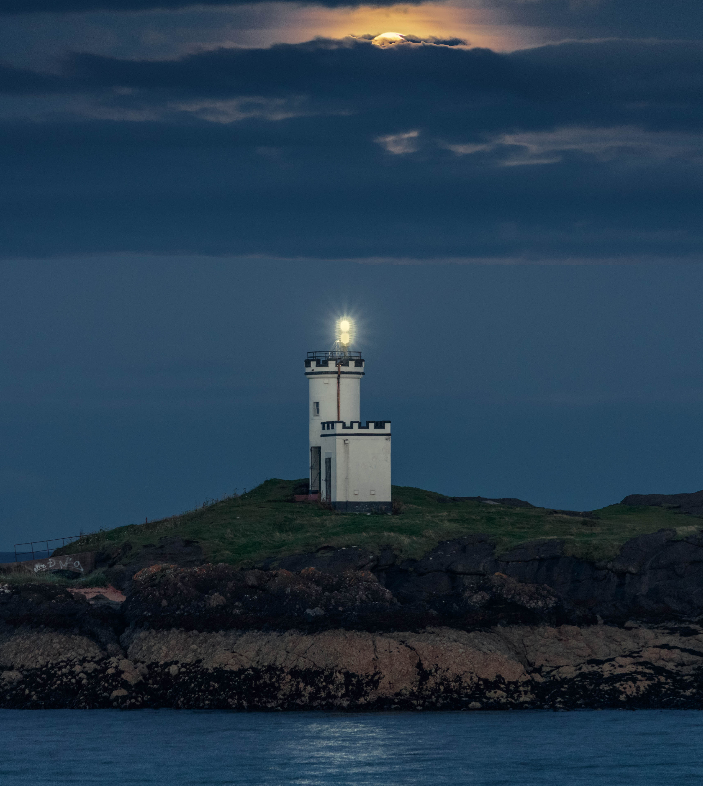
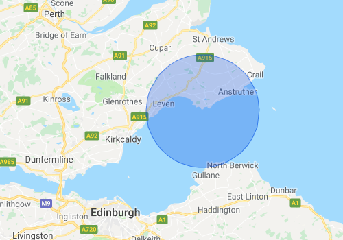
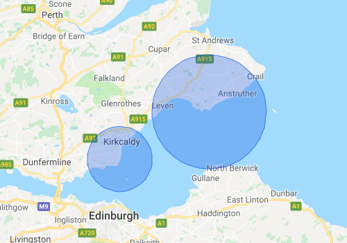
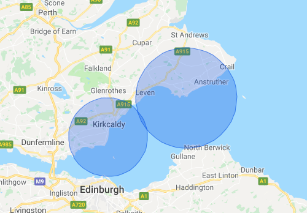
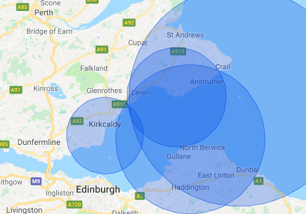
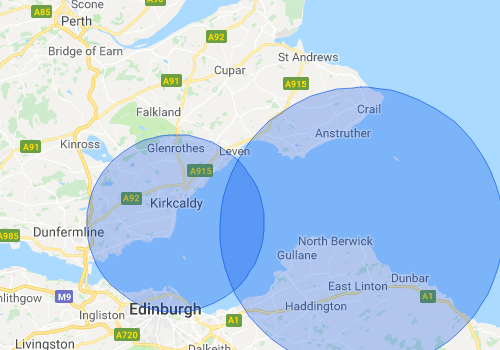
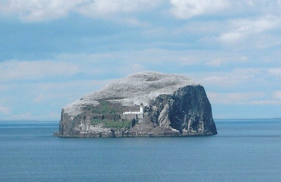
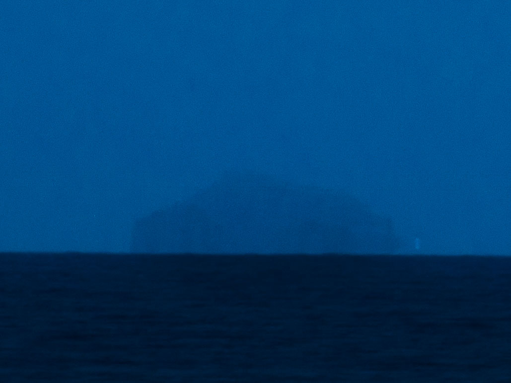

Introduction |
↑ |
Testing the Earth, is it a flat disk on something or is it a ball whizzing through spacetime? It has become something of a lively debate on the Internet. Online there are plenty of strongly opinioned videos, blogs and social media about it. It's mostly passed my by, until now that is. A recent event in my personal life stuck too close to home to let it go by without being addressed. So, lets put it to the test, a proper test that provides a definitive answer.
We are led to believe the Earth is a flat disk, an interesting hypothesis because on an everyday scale it sure does look flat. The general understanding is that it's a oblate spheroid (ball from now on, that's too much to keep typing). In order to test this Flat Earth belief a prediction based on their Flat Earth hypothesis requires testing. This presents the first challenge as I can not seem to find a hypothesis that is actually testable. It seems to be mostly passionate and emotional out-pourings over any real hard facts you can put to the test.
So there does not appear to be a testable hypothesis that can make predictions about a Flat Earth. Instead then, lets go with their favourite mantra, trust your senses. It's the only thing Flat Earthers appear to agree on so that is what is to be tested.
Exactly how do you test a mantra/belief. Well, we need to make a predictable test, try it out and see what the result is. There's really only one way to do that. I am going to have to become a Flat Earther for a day, trust my senses and, without any instrumentation, prove the Earth isn't curved at all and is flat as Flat Earthers claim. The best way to do that is to use the Ballers favourite tools against them. They have a math model of this so called ball planet we live on. I just need to show, using Ball Earth math, that it's all a charade perpetrated by unseen global powers, for reasons no one at all seems to know. We'll come back to this last point at the end in the Final Thoughts section.
Just to be clear about this, some instrumentation will have to be used along with some brain cells to figure how to do the test. But ultimately, to actually carry out the test itself only senses are allowed. No cameras, telescopes, binoculars, etc should be required. To perform the test anyone should just have to turn up, look and see, with their own unaided eye, the result. You will either see it is flat or you will see it is curved. No ambiguity.
This of itself is quite a challenge. As I said previously, on an everyday scale the Earth really does look quite flat. Ball Earthers tell us that is due to the enormous size of the Earth compared to the size of us mere mortals stood on it and any curve requires instruments, such as a theodolite, to measure these tiny curves at our scale. Seeing this curve with the unaided eye to most Ball Earthers just isn't happening. But it is what we are going to have to do to make a test that only requires using just our senses (the unaided eye in this case).
Note, a camera will be used to document the journey and show what is seen as the result purely to document the process. But to truely get a feel for it's veracity, the reader should, if they so wish, be able to just look for themselves and make a decision based on the result they observe. That's the test, plain and simple.
The intended test is simply this: does the horizon actually exist across a "flat" body of water. This test has been done by many. Stephen Hawking's TV show did it. But a Celestron C8 telescope, DSLR camera and a helicopter! Really guys? These are hardly the sort of things most people have in their shed ready to deploy on a beech holiday. And then there's directing a laser across a lake. Mr Hakwing's TV show showed curvature and some other Flat Earthers tried it and claimed their tests showed it flat. Lasers are, over this sort of distance, divergent and I wouldn't really call any test of a laser at 3km distance proof of anything as the previous two tests demonstrated (unless the investment in the lasers used was comparable to Ligo that is). And finally there's all these videos of far off objects with bits missing off the bottom. While it's certainly compelling evidence is does often smack as blurry UFO type images from which anyone and everyone seems to somehow draws their own conclusions. And draw their own concluesions they do. Additionally, it's a video or photograph with long telephoto lens which means instrumentation. That doesn't fit with this project's goal of no instrumentation, trust your senses (the unaided eye in this case).
The search for a laboratory |
↑ |
In order to test the horizon hypothesis we need to find somewhere where the conditions meet the criteria and the variables are, within tolerances, adjustable to have the ability to fine tune observations and record the results as best as possible. Living in Fife - Scotland, I have a great body of water to play with. The Firth of Forth which is many miles across. Additionally, lots of shipping. That's great because it also means it has lots of easily identifable navigation aids that can be seen for many miles; lighthouses.
The only real problem here is that lighthouses are obviosly designed to be seen for many miles. I need to somehow use Ball Earth math to find a location were these Ballers say it should have dropped below the horizon out of sight (dipped or dipping as mariners apparently call it). The goal here is, can we find a lighthouse that's low enough to make it dip given the distances to various locations around the coastline? So we need to do a little bit of math here.
From the Wikipedia page for horizon for a given height \(h\) the distance to its horizon \(d\) is given by:-
| \begin{equation*} d = 3.57 \times \sqrt{h} \end{equation*} |
Out of all the lighthouses with high candle power, Elie Ness stands out as being a potential subject of interest given it's somewhat low height for a lighthouse with a focal plane height of just \(15m\). Here's a picture of it:-
|  |
| Elie and Earlsferry Lighthouse |
Given the above height of \(15m\) we can find where the Ballers say the horizon for it's light focal plane (if you were there looking out from where it's light is) should be:-
| \begin{equation*} d = 3.57 \times \sqrt{15} \end{equation*} \begin{equation*} d = 3.57 \times 3.872983 \end{equation*} \begin{equation*} d = \underline{13.826km} \end{equation*} |
This can be represented pictorially by drawing a circle, with a radius of 13.826km, around the lighthouse so it's horizon looks something close to this:-
|  |
| Elie Ness lighthouse horizon derived from Ball Earth math models |
Interestingly the circle crosses the coast at points, beyond which, if you're prepared to get your face a bit wet Elie Ness lighthouse should dip below the horizon. Good start; but I don't want to get my face wet. But one need not get wet. Standing up gives you, the observer, a horizon also. All we need to do is draw, from our observing point, a horizon circle for the height we are observing at and see if they cross. Horizon cirlces that cross (or just "kiss") means you can see the lighthouse light at or above your horizon. Any space between the circles means the lighthouse light has dipped below your observing horizon. The following images demonstrate this:-
|  |
| Lighthouse light dipped and not visible to observer |
|  |
| Lighthouse visible to the observer |
Notice in the above pictorials the circle around the lighthouse doesn't change because the focal plane of the light is fixed at 15m (not accounting for changes in tidal height). The observers circle however can be increased by simply raising the height of the observer. The radius of the circle increases as height is gained and so the calculated horizon moves further away.
This is looking promising. The observing site shown here is at Seafield Tower which is on the Fife Coastal Path which is easily accessable and just ten minutes walk from a car park. However, to be a proper experiment we need a control, other lighthouses further away than the Elie Ness lighthouse but much higher. We have also Isle of May lighthouse to the east and Fidra lighthouse to the south. With the Isle of May lighthouse standing at an impressive focal plane height of 73m and Fidra at 36m focal plane height, our map now looks something like this:
|  |
| Elie Ness, Isle of May and Fidra lighthouses |
This is looking like an excellent candidate for an observation point. The coastal path at Seafield rises quickly so we can adjust the observer height from zero to 22m by simply walking along the path or if we don't mind trampling through some long grass up the incline behind the path. Additionally we can control the flat plane of water relative to the focal plane heights of the lighthouses by simply picking the correct time of day for the incoming or outgoing tide which can swing by as much as 5m across the Firth of Forth.
One last point I haven't mentioned yet. There is one more lighthouse within this zone. Bass Rock. More on this later because it's one of those omg observations. But you need a camera with a long telephoto lens so falls into the requires instrumentation and fuzzy blurry categories. So this will just appear in the appendix for those interested.
Now we have done our desk based homework and found our choosen observing site, it's time to actually go there and do some obervations that clearly demonstrate the lack of a horizon as described by Ball Earth math and revealing the truth about the real shape of our planet.
Testing the Ball Earth horizon hypothesis |
↑ |
Conclusions |
↑ |
Horizons are real, the Earth is curved and if it curves all the way round in every direction it must be ball shaped.
Appendix 1 - Bass Rock |
↑ |
The critical distance is a term I will use here to describe the distance between two locations whose horizons "kiss", where they just touch. There's no gap between the horizons but neither do they overlap. At this disatnce each observer would see the other on the horizon, right at the dipping point. This distance can be found by the simple equation (where d is the critcal distance, h1 is the observer's height, SF18 in this case, and h2 is the height of the Bass Rock lighthouse focal plane):-
| \begin{equation*} \because Dcritical = 3.57 \times ( \sqrt{h1} + \sqrt{h2} ) \end{equation*} \begin{equation*} \therefore Dcritical = 3.57 \times ( \sqrt{18} + \sqrt{46} ) \end{equation*} \begin{equation*} \therefore Dcritical = \underline{39.359km} \end{equation*} |
It can also be found by simply adding together the horizon distances as previously derived and from the data table in appendix 2 the critcal distance between Seafield SF18 and Bass Rock lighthouse agrees as shown:
| \begin{equation*} \because Dcritical = 15.146 + 24.213 \end{equation*} |
| \begin{equation*} \therefore Dcritical = \underline{39.359km} \text{✔} \end{equation*} |
However, the actual distance between these two locations when calculated is somewhat less than the critical distance at 32.287km. Again, plotting these as circles on the map we see an overlap thus:
|  |
So clearly from the Ball Earth math calculations the Bass Rock light at it's focal plane should be visible above the horizon. But can we calulate how much of what is under the Bass Rock light's focal plane is hidden by the Earth's curvature. Well, using Ball Earth math, yes we can theorize what this might be thus:
The height at which Bass Rock itself and the base of the lighthouse start to become visible is at the actual distance 32.287km. We know the horizon distance for Seafield SF18 is 15.146km. If we subtract this from the actual we are left with the distance to horizon that would be critical at the height Bass Rock dissapears below the horizon.
| \[Dbassrock = 32.287 - 15.146\] \[Dbassrock = \underline{17.141km}\] |
So what height does this equate to on Bass Rock that, below which, is hidden from view at Seafield SF18 due to the Earth's curvature?
| \begin{equation*} \because \text{ } distance = 3.57 \times \sqrt{height} \end{equation*} \begin{equation*} \therefore \text{ } 17.141 = 3.57 \times \sqrt{height} \end{equation*} \begin{equation*} \therefore \text{ } height = {\left( \frac {17.141} {3.57} \right)}^2 \end{equation*} \begin{equation*} \therefore \text{ } height = \underline{23.053m} \end{equation*} |
| \begin{equation*} \because \text{ } distance = 3.57 \times ( \sqrt{h1} + \sqrt{h2} ) \end{equation*} \begin{equation*} \therefore \text{ } 32.287 = 3.57 \times ( \sqrt{18} + \sqrt{23.053} ) \end{equation*} \begin{equation*} \therefore \text{ } 32.287 = 3.57 \times ( 4.242641 + 4.801354 ) \end{equation*} \begin{equation*} \therefore \text{ } 32.287 = 3.57 \times 9.043995 \end{equation*} \begin{equation*} \therefore \text{ } \underline{32.287 = 32.287} (kilometers) \text{✔} \end{equation*} |
Both approaches to the problem agree. And of course they should, they are effectively two forms of the same basic equation.
So from Seafield SF18 Ball Earth math says roughly 23m of Bass Rock should be hidden below the horizon. Lets have a look at what we actually see. Here is a close up of Bass Rock (courtesy of themodernpostcard.com). We can cleary see the lighthouse, which Wikipedia says has a tower of 20m. It's perched high up. The focal plane of the light is 46m. Given that the light will be approx 1m below the tip of the tower this means there's roughly 46 - 19 = 27m of rock from the base of the tower down to sea level. So it's quite clear from those facts and this picture there's a fair bit of Bass Rock under the base lighthouse tower.
|  |
| Bass Rock (courtesy of themodernpostcard.com) taken from the North Berwick coast in the south looking north |
And what does this actually look like from Seafield SF18, some 32km away?
|  |
| Bass Rock at a distance of 32km taken from Seafield SF18 in the west looking east |
So we know Ball Earth math says around 23m of Bass Rock should be hidden from view when observed from a distance of 32km away. Remember, the tower is 20m in height and there should be 27m of Bass Rock below the lighthouse tower. I will let you study these pictures and using your own senses and judgement decide for yourself if 23m or so of Bass Rock is missing from this view due to being below the horizon.
And just to get an understanding of the shape of Bass Rock around the lighthouse area an aerial view can be seen by following this link. There are clearly outcrops to the south where boats dock to gain foot access to the island and lighthouse. These are obviously missing from the above image.
As CaptainDisillusion likes to say Love with your heart but for everything else use your head
Appendix 2 - Data |
↑ |
| Name | Latitude (N) | Longitude | Height (m)† | Distance to horizon (km) |
| † | Observed height above the sea level at the time using Hawk LFR600 Pro laser ranging device (in height mode). |
| Name | Latitude (N) | Longitude | Height (m) | Distance to horizon (km) |
| From | To | Distance (km) | Visible | Bearing† | Below (m)†† | Above (m)††† |
| † | When using a compass to look along the bearing 4° should be added to the above figure for magnetic variation for the Seafield location. |
| †† | The critical height of the lighthouse, below this value the lighthouse is hidden by the horizon. |
| ††† | The distance between the lighthouse focal plane and the horizon. Negative values are below the horizon and therefore not visible at the observing site. |
Appendix 3 Tools and Utilities |
↑ |
| Oliver Beattie's Google Maps circle plotter |
| Canon 760D (T6s) |
| Canon EF-S 55-250mm f/4-5.6 IS STM Lens |
| Hawke Laser Range Finder Pro 600 |
| Garmin 64s GPS |
| Silva Ranger Compass |
Disclaimer |
↑ |
Photoshop was used on images in this page only to crop in (zoom) to provide a clearer view of what was observed. No manipulation or distortions of any objects or horizons relative to one another were done to deceive the reader. If you think otherwise and wish to challenge these images you'll need to travel to Seafield and take your own photographs as evidence of your own observations. The photographs on this page are an accurate representation of my own observations made at Seafield using just my senses as requested.
Final Thoughts |
↑ |
If you believed the Earth is a flat disk congratulations for making it this far. It must have been a tough read to this point. If you still believe the Earth is flat then there's a Nigerian prince looking for some assistence in moving $20million from a hidden slush fund and he could do with your help. He'll email you soon if he hasn't already. Where you go from here is up to you. Just don't let the charlatans steal your hard earned money. Because ultimately, that's what the few who perpetrate this FUD seek. Don't become a victim, become a victor and rise above the con artists lunacy.